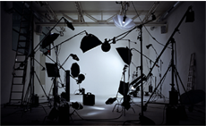

Incredibly fast & easy motion capture
Shoot on any 2D device
Artificial intelligence
Immediate results
Sign up in under a minute
No credit card required
Features
- Automatically detects human motion in 2D videos and converts it into 3D space.
- No depth-sensing cameras, sensors, markers, suits, software or constrained environments.
- Results can be instantly processed into moving animations.
Freedom to create and iterate
Our platform provides freedom to create, test and iterate.
Our AI detects most poses and motion independently of the clothing worn in the video.
No sensors, markers or suits required.
Any device
From smartphones through professional cameras, you can shoot on any device.
Any enviroment
Non-human objects are automatically ignored. We require no specific lighting conditions.
Outdoors
Home
Studio
Output
We deliver plug-and-play output that is user-friendly.
Our results are pre-cleaned, and can be instantly previewed and downloaded.
AUTOMATIC CLEAN UP
All output from a scan is put through proprietary algorithms to clean your results for maximum utility.
We de-jitter, de-snap and normalize the data, so you can best plug them into your pipeline.
PREVIEW RESULTS
We make all results available through our cloud-based visualization engine.
A rendered skeletal armature allows you to pre-visualize your work product long before you start working on the MoCap file as part of your rig.
Downloads
All results are downloadable, for use across animation and gaming engines, including:
- - FBX (*.fbx)
- - AutoCAD DXF (*.dxf)
- - Alias OBJ (*.obj)
- - Collada DAE (*.dae)
- - Biovision BVH (*.bvh)
- - Motion Analysis HTR (*.htr) / TRC (*.trc)
- - Acclaim ASF (*.asf) / AMC (*.amc)
how it works
Access RAD whenever you need, wherever you are. We’re always on.
cloud processing
- Low cost
- No hardware required
- On demand
On premise
- Real time
- Unlimited access
- API Integrations
The right package for everyone
See why so many independent animators and studios
use RAD to power motion in 3D animation and AR/VR.
- Price
- Delivery Method
- Credits
- Playtime
- GPU
- Processing time
- Automatic Cleanup
- All downloads
- Customer Support
- $400
- Cloud
- 120
- 360 seconds
- Nvidia Quadro P5000
- 2x playtime(or faster)
- phone or email
- Price
- Delivery Method
- Credits
- Playtime
- GPU
- Processing time
- Automatic Cleanup
- All downloads
- Customer Support
- $125
- Cloud
- 30
- 90 seconds
- Nvidia Quadro P5000
- 3x playtime(or faster)
- phone or email
- Price
- Delivery Method
- Credits
- Playtime
- GPU
- Processing time
- Automatic Cleanup
- All downloads
- Customer Support
- $50
- Cloud
- 10
- 30 seconds
- Nvidia Quadro K6000
- up to 120 minutes
- Price
- Delivery Method
- Credits
- Playtime
- GPU
- Processing time
- Automatic Cleanup
- All downloads
- Customer Support
- On Premise and Cloud
- Call us
- +1 917 226 6244
Testimonials
our mission
RAD was founded to develop the world’s most powerful computer vision technology focused on detecting, interpreting and measuring the human body in digital images.
AI-powered motion capture for 3D animation, AR, VR and MR
— in the cloud and on every device.
To achieve this, we are using multiple bodies of science in a proprietary configuration, including computer vision, deep learning and anthropometry. Our system continually learns and perpetually improves. In our minds, we will never truly be done.
Our goal is to see the technology implemented across mobile, web and enterprise environments, seamlessly powering 3D animation, gaming, virtual reality, augmented reality and industrial applications, including drones, autonomous vehicles, sports and health.
Anna & Gavan
Team
Gavan Gravesen
Co-fonder & CEO
Worked @Slated.com (co-founder), @Deutsche Bank, @Cleary Gottlieb • Studied @New York University School of Law, @Copenhagen University, @Conservatory of Music, Berlin
Anna Bellini
Co-fonder & CTO
Worked @TopTal(Lead Director of Engineering), @CASY (3D Drone Simulation Scientist) • Studied @Università di Bologna (MS, CS)
ROGER HIE
Strategy & Marketing
Worked @CANDR&CO (founder), @InDigital Media Group (CEO), @Young & Rubicam (Global Strategy Director) • Studied & @University of Technology - Sydney, Australia
PROF. SERGE BELONGIE
Advisor
Professor @Cornell U. / Cornell Tech (Computer Vision, Machine Learning), @Orpix (Co-founder & Technical Advisor), @DigitalPersona (Co-founder) • Google Scholar • Studied @Berkeley (PhD)
STEVE SADOVE
Advisor
Board @JCPenney, @Aramark, @Colgate, @Palmolive, @Ruby Tuesday • Worked @Saks (CEO), @Bristol-Myers Squibb (CEO), @Clairol (President), @Kraft General Foods • Studied @Harvard Business School
Dr. Jeffrey A Sachs
Advisor
Worked @Sachs Policy Group (CEO/Owner), @Health Policy Advisory Committee on federal health care reform (member), @HELP USA (founding director) • Studied @Stony Brook University School of Dental Medicine
SIMON COLLINS
Advisor
Worked @Parsons School of Design (Dean), @Nike, @Ralph Lauren, @Zegna, @Marks & Spencer • Advisor @WGSN, @WME/IMG • Studied @Epsom School of Art & Design